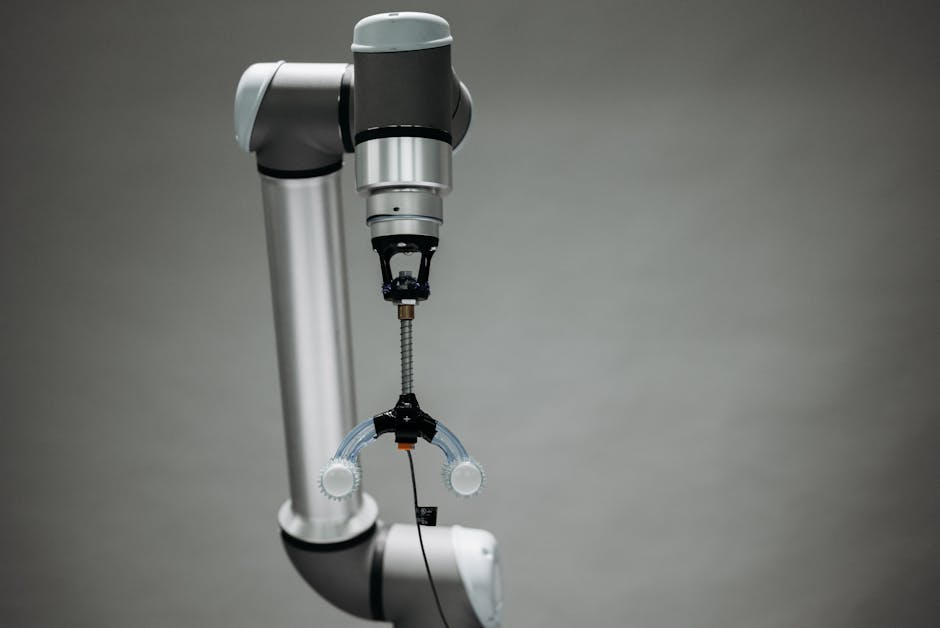

Imagine a world where surgeons perform intricate operations with superhuman precision, where patients recover faster with less pain, and where healthcare reaches even the most remote corners. This isn't science fiction anymore! Welcome to the incredible realm of medical robotics, where intelligent machines are transforming healthcare, making it safer, more efficient, and accessible. From tiny cameras navigating the human body to powerful exoskeletons helping patients walk again, robots are becoming indispensable partners in our quest for better health. Join us at MakerWorks as we explore how these mechanical marvels are revolutionizing medicine, right here in India and across the globe!
The Operating Theatre's New Best Friend: Surgical Robots
When you think of a robot in a hospital, your mind might immediately jump to the operating room. And you'd be right! Surgical robots are perhaps the most famous and impactful application of medical robotics. These aren't autonomous robots performing surgery on their own; instead, they are sophisticated tools that assist human surgeons, enhancing their capabilities.
Precision and Minimally Invasive Surgery
The primary advantage of surgical robots lies in their unparalleled precision and control. A surgeon sits at a console, viewing a high-definition, 3D image of the surgical site, magnified many times. They use master controls that translate their hand and wrist movements into much smaller, more precise movements of robotic instruments inside the patient's body. This allows for incredibly delicate operations through tiny incisions, leading to what's known as minimally invasive surgery.
- Enhanced Dexterity: Robotic instruments can rotate 360 degrees, far exceeding the natural range of a human wrist.
- Tremor Filtration: The robotic system filters out any natural hand tremors a surgeon might have, ensuring steady, precise movements.
- Magnified Vision: High-definition 3D cameras provide an incredibly detailed view of the surgical area.
- Reduced Blood Loss and Pain: Smaller incisions mean less trauma to the body.
- Faster Recovery: Patients often experience quicker healing times and shorter hospital stays.
The Da Vinci Surgical System: A Pioneer
The most well-known surgical robot system is the da Vinci Surgical System, developed by Intuitive Surgical. It's been a game-changer in various fields, from urology and gynecology to cardiac and general surgery. Imagine a surgeon controlling multiple robotic arms, each holding a tiny instrument, performing complex procedures with incredible accuracy. This system has paved the way for countless other specialized surgical robots, each designed for specific tasks, from spinal surgery to eye operations.
"The da Vinci Surgical System is not just a tool; it's a paradigm shift in how complex surgeries are approached, offering a bridge between human expertise and robotic precision."
Beyond the Operating Room: Robots in Everyday Medical Care
While surgical robots capture headlines, the impact of medical robotics extends far beyond the operating theatre. Robots are becoming integral to many other aspects of healthcare, improving patient care, streamlining hospital operations, and even assisting in recovery.
Rehabilitation Robots: Helping You Move Again
For patients recovering from strokes, injuries, or neurological conditions, regaining mobility and strength is crucial. Rehabilitation robots are designed to assist in this process. These can range from robotic exoskeletons that help patients learn to walk again, to robotic arms that guide repetitive exercises, helping to rebuild muscle memory and strength. They provide consistent, measurable therapy, often making the process more engaging and effective.
Imagine a robot guiding your arm through a series of exercises, adjusting resistance based on your progress, and logging your performance. This personalized approach accelerates recovery and reduces the burden on human therapists.
Healthcare Automation: Streamlining Hospitals
Hospitals are complex environments, and robots are increasingly used for tasks that enhance efficiency and safety, contributing significantly to overall healthcare automation:
- Pharmacy Automation: Robots can accurately count, dispense, and package medications, reducing errors and speeding up delivery.
- Laboratory Automation: Robotic systems handle and analyze patient samples (blood, urine, etc.) with high throughput and precision, accelerating diagnostic processes.
- Logistics and Delivery Robots: Autonomous mobile robots (AMRs) navigate hospital corridors to deliver medications, lab samples, linens, and meals, freeing up staff for direct patient care.
- Disinfection Robots: Using UV-C light or other technologies, robots can effectively disinfect patient rooms and operating theatres, reducing the spread of infections.
Telemedicine and Remote Assistance
Robots are also playing a role in extending healthcare access. Telepresence robots allow doctors to consult with patients remotely, even in distant or underserved areas. Imagine a doctor in Mumbai guiding a nurse in a rural clinic through a patient examination via a robot equipped with cameras and diagnostic tools. This bridges geographical gaps and brings expert care closer to those who need it most.
The Future is Now: Medical Robotics in India
India is rapidly embracing medical robotics. Hospitals in major cities are increasingly adopting surgical robots like the da Vinci system, and there's growing interest in rehabilitation robots and hospital automation. This creates immense opportunities for young innovators and engineers in India to contribute to this exciting field.
The demand for skilled professionals who can design, operate, and maintain these sophisticated systems is on the rise. From developing AI algorithms for diagnostic assistance to creating cost-effective robotic solutions for rural healthcare, the scope is vast.
A Glimpse into Robotic Control (Conceptual Code)
While real-world medical robot control systems are incredibly complex, let's imagine a very simplified conceptual example of how a rehabilitation robot might guide a patient's arm through an exercise. This isn't actual executable code, but a simplified Python-like pseudocode to illustrate the logic:
# Conceptual Pseudocode for a Rehabilitation Robot Arm Movement
def perform_arm_exercise(robot_arm, target_angle, speed_setting):
"""
Guides the robot arm (and patient's arm) to a target angle.
In a real system, 'robot_arm' would be an object with control methods.
"""
current_angle = robot_arm.get_current_angle()
print(f"Starting exercise. Current angle: {current_angle} degrees.")
# Move arm incrementally towards the target angle
# The '1' represents a small tolerance for reaching the target
while abs(target_angle - current_angle) > 1:
if target_angle > current_angle:
robot_arm.move_clockwise(speed_setting)
else:
robot_arm.move_counter_clockwise(speed_setting)
# Update current_angle based on sensor feedback
current_angle = robot_arm.get_current_angle()
print(f"Moving... Current angle: {current_angle} degrees.")
# In a real system, there would be continuous sensor feedback,
# advanced safety checks, and patient interaction monitoring here.
print(f"Exercise complete. Reached target angle: {current_angle} degrees.")
# --- Simulation of Usage (how this function might be called) ---
# Imagine 'my_robot_arm' is an instance of a RobotArmController class
# my_robot_arm = RobotArmController()
# Example: Perform an exercise to reach 90 degrees at medium speed
# perform_arm_exercise(my_robot_arm, 90, "medium")
# Example: Then perhaps return to 0 degrees at slow speed
# perform_arm_exercise(my_robot_arm, 0, "slow")
This simple example shows how a robot might use sensor feedback (get_current_angle()) and control commands (move_clockwise(), move_counter_clockwise()) to achieve a desired action. Real medical robots use advanced algorithms, AI, and precise motor control to ensure safety and effectiveness.
Conclusion: Robotics – The Pulse of Future Healthcare
From revolutionizing surgical precision with systems like da Vinci to offering a new lease on life through rehabilitation, and from automating hospital logistics to extending the reach of expert care via telemedicine, medical robotics is reshaping the landscape of healthcare. These intelligent machines are not replacing human doctors or nurses, but rather empowering them, allowing them to perform their jobs with greater precision, efficiency, and safety.
For students and enthusiasts in India, this field presents an exciting frontier. The fusion of engineering, computer science, and medical knowledge offers endless possibilities for innovation. Imagine designing the next generation of surgical instruments, creating AI-powered diagnostic aids, or building robots that can deliver essential care to remote villages. The potential to make a real difference in people's lives is immense.
Are you inspired by the power of robotics to heal and help? At MakerWorks, we believe in nurturing the next generation of innovators. Explore our workshops, courses, and resources to dive deeper into the world of robotics and STEM. Who knows, your ideas might just be the next big breakthrough in medical technology!
Join the MakerWorks community today and build the future of healthcare, one robot at a time!